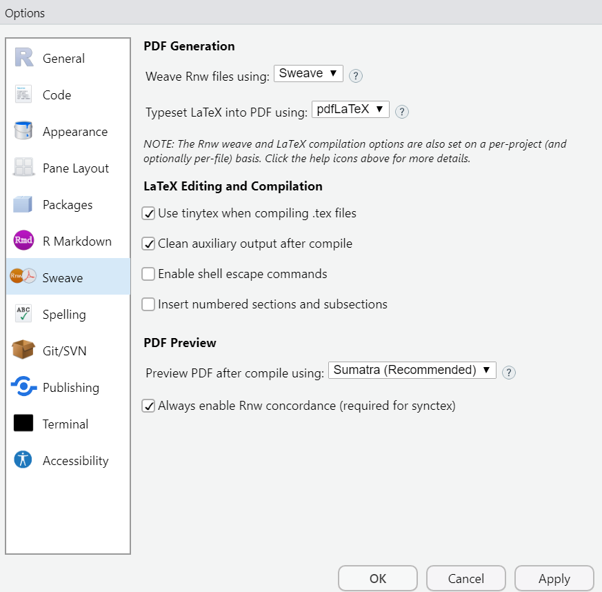

# skriv din R-kod härIntroduktion till att använda R med Quarto
MASB11 VT 23
1 Introduktion
Quarto är ett verktyg för att skapa rapporter genom att kombinera R-kod med text. Ni kommer använda Quarto för att göra laborationer och skapa laborationsrapporter i kursen. Ni uppmanas använda Quarto för de två miniprojekten, men det är inget krav.
Detta är en introduktion till verktyget med exempel på vad man kan göra med Quarto.
Öppna Rstudio och filen Lab0_provexempel.qmd.
Rubriken på detta dokument kallas YAML. Den beskriver inställningarna för dokumentet på ett hierarkiskt sätt. Notera att var man placerar text (indraget) i YAML spelar roll för hur det tolkas.
Gå igenom dokumentet och utforska kommentarerna för att förstå de olika inställningarna. Testa ändra några inställningar och reproducera (sticka ihop) dokumentet med knappen “Render” i Rstudio.
1.1 Stickning av .Rmd till PDF
För att kunna göra pdf-filer behövs något som heter LaTeX i ditt system.
TinyTeX är den minimala installationen av LaTeX som är tillräcklig för att producera PDF-rapporter från R.
Ställ in hur pdf-filer genereras i Rstudio genom att gå in på
Tools > Global options > Sweave
Se till att boxen use tinytex when compiling .tex files är ifylld.

Installation av TinyTeX kan ta en stund. När den är installerad tryck på den svarta nedåtpekande pilen till höger om Render-symbolen. Välj “Render PDF”.
Om allt går som det ska ska det öppnas ett pdf-dokument i en pdf-läsare. Om inte, kontakta instruktör.
1.2 Stickning av .Rmd till Word
R kan också göra dina dokument till Word! Tryck på den svarta nedåtpekande pilen till höger om Knit-symbolen. Välj “Render MS Word”.
Om allt går som det ska ska det skapas ett docx-dokument under samma namn (t.ex Lab0_provexempel.docx). Om inte, kontakta instruktör.
1.3 Köra ett R-kommando och få in resultat i ett kommandoblock (“chunk”)
Skriv din R-kod i området nedanför. Testa att beräkna 3 + 4. Notera att symbolen # framför en kod avaktiverar koden.
Om du skriver 3 + 4 kommer resultatet synas när du renderar och man ser även R-koden.
Du kan dölja R-koden genom att ställa in alternativet echo på falskt (echo: false). Detta är inställning för just denna del (chunk) och ska börja med #|. Testa vad som händer om du lägger till #| echo: falseoch stickar ihop dokumentet på nytt.
Notera att det även går att ändra inställningar för hela dokumentet (globalt), vilket är relevant för miniprojekten.
1.4 Köra ett R-kommando och få in resultat direkt i texten
I det dokument som skapas ser man fortfarande resultatet från 3 + 4 som
[1] 7
Föreställ dig en situation där du i din rapport text ska skriva in resultatet från denna beräkning. Först måste du spara resultatet i en variabel, låt oss kalla den “resultat”.
Sen skriver du en text i vilken du hänvisar till “resultat”. För att programmet ska veta att resultat är en variabel inne i R, skriver du ett r framför variabeln i texten.
Sticka ihop dokumentet och då bör du på den platsen i dokumentet se följande
Om man lägger ihop 3 och 4 får man 7.
1.5 Göra beräkningar och implementera resultat i text
Du kan också utföra mer komplexa beräkningar i text.
x <- 1:10
x [1] 1 2 3 4 5 6 7 8 9 10Variabeln x innehåller en vektor av tal. Medelvärdet för denna vektor är 5.5 och variansen är 9.1666667.
I mallen finns det flera ställen där resultat används i text. Studera några av dem. Lägg märke till att värdet ibland kan avrundats till 2 eller 3 decimaler med 9.17.
1.6 Skriva matematiska formler såsom modell och hypoteser
Matematiska formler skrivs med hjälp av MathJax (typ LaTeX). På samma sätt som symbolen r markerar när något är en kod eller variabler i R, markeras LaTeX text av dollartecken för och efter utrycket (t. ex. \(f\)). Använd två dollartecken före och efter för att få ett matematiskt uttryck som är på en egen rad.
\[ E=mc^2 \]
Tips
Kolla i rapportmallen hur vi har gjort
Testa att få fram följande text genom att ställa dig på en tom rad någonstans i QMD-filen eller öppna ett nytt QMD dokument och skriva uttryck med LaTeX/MathJax. Gå till File och välj New File > Quarto Document.
Grekiska bokstäverna
\(\mu\), \(\sigma\) och \(\alpha\).
Skriv ett uttryck med nedsänkt/upphöjd text
\(x_1\) eller \(y_i\)
Du kan gör mer än en symbol nedsänkt, t.ex. \(X_{gruppA}\) eller \(Y_{ij}\).
Tips
För att få mer än en sak nedänkt behöver man sätta det som ska sänkas ned inom klammerparentes
Skriv ett uttryck med upphöjd text som \(x^2\) eller \(\sigma^2\). Likaså kan flera symboler höjas \(e^{-\beta x}\). Ta gärna med mellanslag mellan symbolerna för läsbarhet
Skapar man uttryck med en summa/produkt
\(\sum_{i=1}^{n} x_i\) eller \(\prod_{i=1}^N k_i\)
Skapa ett uttryck som är en kvot
\(\frac{1}{n}\)
Skriv in nya uttryck
Laborations-handledare har skrivit upp några uttryck på tavlan.
Du kan också hitta dem här länk till sida i canvas
Försök att producera uttrycken i detta dokument